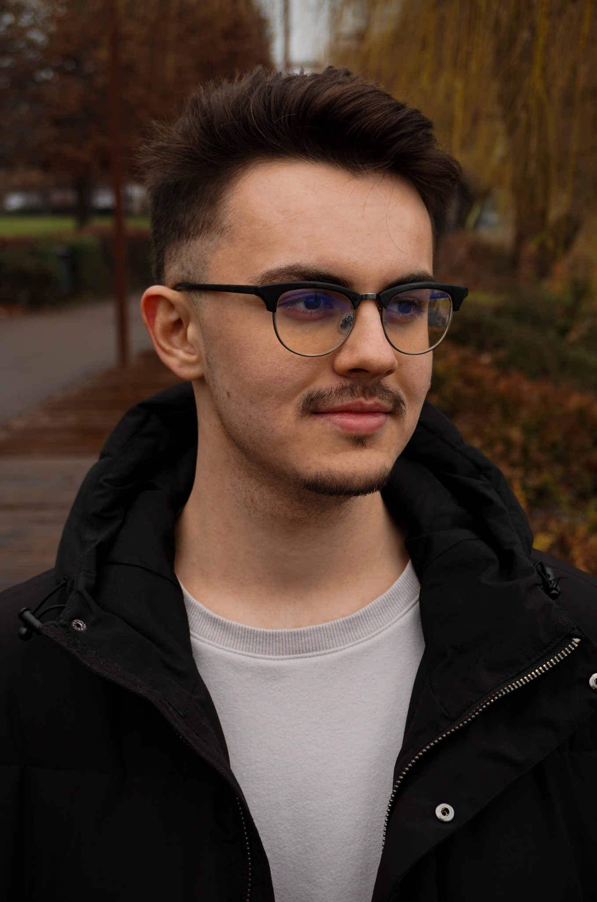

Podina Horatiu
Student

Obiective in cariera
Sa pot lucra pentru o companie incurajatoare si stabila, care ma va ajuta
in dezvoltarea, imbunatatirea si obtinerea abilitatilor necesare pentru a
deveni cel mai bun inginer posibil.
Educatie
- 05.2018 - ECDL Profile Certificate
- 07.2020 - Certificat de competente lingvistice Nivelul A2
- 09.2020 - Diploma de Bacalaureat – profil Tehnic –
Liceul Tehnologic Ion I.C. Bratianu
- In prezent - Universitatea Bogdan-Voda din Cluj-Napoca - Anul I
Experienta
- 02.07.2018-01.09.2018 Operator prelucrare mase plastice –
Schlemmer - indistria constructoare de masini - procesul tehnologic de
prelucrare a pieselor din clasa “bucse”.
-
05.2021-Prezent Casier Cinema One Laserplex Satu Mare Vanzare
de bilete, rezervari, directionarea corecta a clientilor in cinema: acces
in cinematograf, verificarea biletelor de acces, implementarea politicii
referitoare la restrictiile de varsta, asigurarea suportului necesar pentru
o buna gestionare a activitatii
- In prezent - Televiziunea NCN ca si operator imagine
Aptitudimi
- Utilizarea pachetului Microsoft Office
- Utilizarea pachetului Adobe ( PS, IL, Pr, XD)
Contacte
Locatie: Cluj-Napoca
Nr Tel: 0772 082 177
Mail: podinahoratiu915@yahoo.com
Unde ma poti gasi